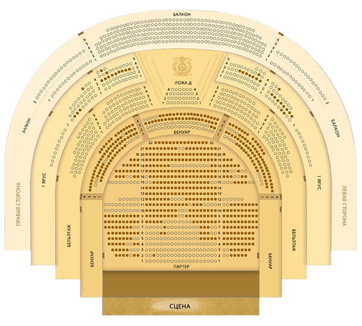
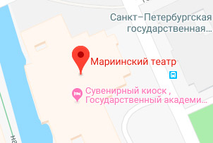
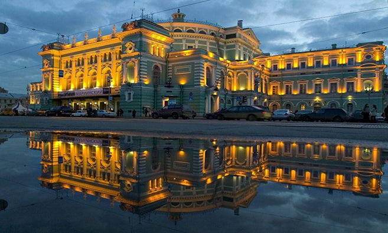
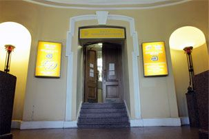

Визит в театр
Где купить билеты
Приобретая именные билеты на спектакли, необходимо указывать имя,
фамилию и отчество посетителя, а в день представления – предъявить
вместе с билетом документ, удостоверяющий личность.
О билетах с измененной ценой
Уважаемые зрители, в последнее время участились случаи предъявления на
входе в театр билетов с исправленной или отсутствующей ценой. Обращаем
ваше внимание на то, что в соответствии с ФЗ № 193 от 18.07.2019 и
пунктом 3.16 Правил продажи билетов ФГБУК «Государственный академический
Мариинский театр» билет, в который внесены любые изменения (в том числе
скрывающие какую-либо информацию на билете), считается недействительным.
Администрацией театра будет отказано в посещении театра лицам,
предъявившим такие билеты, без возмещения их стоимости. Данное правило
распространяется и на электронные билеты.
Обращаем внимание, что участились случаи мошенничества при перепродаже
билетов в Мариинский театр. Спекулянты создают сайты-клоны, частично
копирующие внешний вид официального сайта театра, рекламируют их в
поисковых системах и продают на них билеты по существенно завышенной
цене. С 1 сентября 2019 года вступили в силу изменения в
законодательстве, которые сделали подобную деятельность незаконной.
Мариинский театр не несет ответственности за подлинность билетов,
приобретенных на мошеннических сайтах, и не гарантирует возможность
посещения по ним мероприятий, особенно в случае отсутствия на билете
цены и другой официальной информации. Во избежание неприятных для вас
ситуаций, будьте осторожны и предупредите о возможной опасности ваших
близких и друзей.
Информация о переносе спектаклей и возврате билетов
Спектакли и концерты, запланированные с 18 марта 2020 года, переносятся
на более поздние даты в течение текущего и будущего сезонов согласно
следующему графику. Билеты на перенесенные спектакли и концерты действительны, вам не
нужно их сдавать. В случае, если вы решите вернуть билеты,
сделать это можно следующим образом. По возникающим вопросам с 11.00 до 19.00 обращайтесь по телефону
справочной службы +7 812 326 41 41 или по адресу электронной почты
tickets@mariinsky.ru.
На сайте театра
Вы можете приобрести билеты на сайте театра, предварительно выбрав
место.
Однако за 1 час до начала спектакля (концерта) продажа билетов на него
на сайте театра прекращается и осуществляется только непосредственно в
кассах театра.

В здании Мариинского театра
Вы можете приобрести билеты в кассе театра, расположенному по адресу :
Театральная пл., 1
Время работы: ежедневно с 11.00 до 19.00, перерыв с 14.00 до 15.00


В здании Мариинского-2
Вы можете приобрести билеты в кассе Мариинского-2, расположенному по
адресу : ул. Декабристов, д. 34
Ежедневно с 11.00 до 19.00, перерыв с 15.00 до 16.00
В здании Концертного зала Мариинского театра
Вы можете приобрести билеты в кассе Концертного зала, по адресу: ул.
Писарева, д. 20 (вход с ул. Декабристов, 37)
Ежедневно с 11.00 до 19.00, перерыв с 14.00 до 15.00
В здании Большого Гостиного Двора
Угол Невской и Перинной линий, 2-й этаж (до 14.00 вход только через
галерею 2-го этажа Гостиного Двора). При закрытом переходе на второй
этаж центрального входа в кассу можно пройти через галереи второго
этажа Думской и Невской линий.
Ежедневно с 11.00 до 20.30, перерыв с 14.30 до 16.00
Касса возврата билетов не производит

Внимание
За 30 минут до начала спектакля (концерта) кассы в Мариинском театре и в
Концертном зале осуществляют продажу только на текущий спектакль
(концерт).